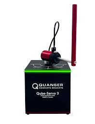
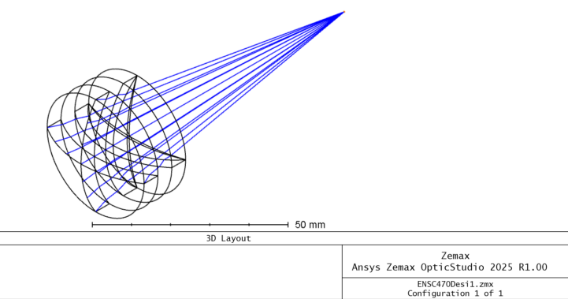
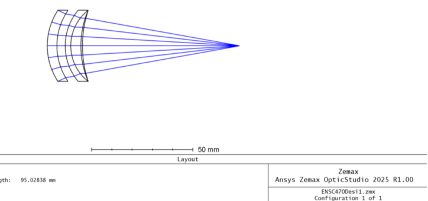

Featured Projects
My Capstone: Seizure Detection and Intervention System
A multimodal detection and intervention platform reducing nighttime SUDEP risk. I integrated embedded systems, control logic, and pneumatic actuation to reposition patients safely.

- Wrist module with EMG, IMU, and pulse sensors
- Four-cell pneumatic topper with solenoid routing
- Heat-map sensing under pillow for position detection
- MATLAB detection logic ported to Python


Medical Image Segmentation
Tumor segmentation using CLAHE preprocessing, adaptive thresholds, and connected-component logic.

Rotary Inverted Pendulum Control
LQR and pole-placement controllers for the Quanser QUBE-Servo 3.
Infrared Achromatic Triplet Lens for Thermal Imaging
I designed and optimized a long-wave infrared (LWIR) achromatic triplet lens for thermal imaging applications. The goal was to achieve high performance in the 8–14 µm band while meeting strict constraints on focal length, axial length, and lens diameter. This work is based on my ENSC 470 design project.
 - Designed a 100 mm effective focal length triplet optimized for the 8–14 µm LWIR band
- Used Germanium, Zinc Selenide (ZnSe), and Gallium Arsenide (GaAs) to balance dispersion and minimize chromatic focal shift
- Applied AR_400–700 anti-reflection coatings to maximize LWIR transmission
- Reduced chromatic focal shift to 34.6 µm and achieved an 11.065 µm average RMS spot radius
- Maintained a total axial length under 20 mm with a 35 mm clear aperture
This compact LWIR imaging system minimized aberrations while maintaining strong thermal imaging performance, showing consistent focus and sharp edges in simulated scenes.